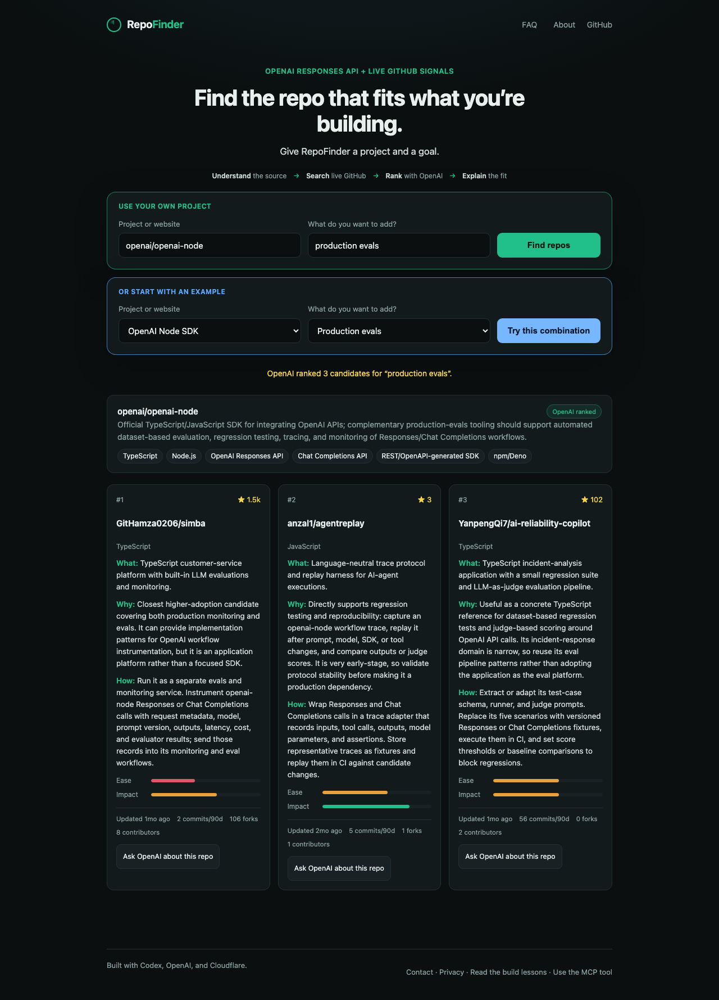
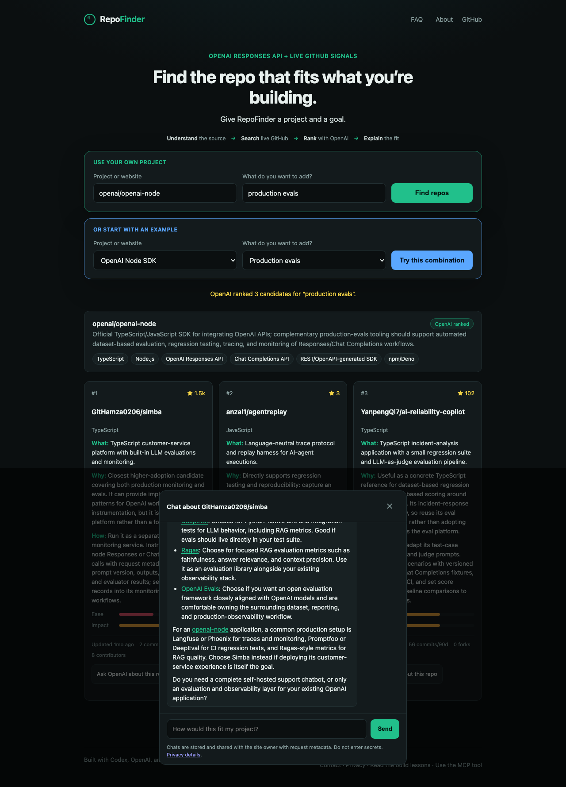

RepoFinder turns a project and goal into current, evidence-backed GitHub recommendations, then lets the builder ask OpenAI about any result.
Plain HTML, CSS, and JavaScript
Search, results, and repo chat
HTTP API and MCP server
Validation, rate limits, and static assets
GitHub discovery and live signals
OpenAI Responses API ranking
Usage, request context, contacts, and complete chat transcripts
Best-effort page, search, contact, and conversation alerts
A labeled degraded mode keeps the core search useful if AI is unavailable


Ranking, input classification, SSRF boundaries, safe Markdown, prompt separation, request allowlists, and Telegram chunking.
Every primary page returned 200 with 195 to 312 millisecond loads after deployment.
The same recommendation engine serves both the browser API and a remote MCP tool.